Interconexión entre BBDD
1. Interconexión entre dos bases de datos PostgreSQL.
1.1 Creación de la base de datos y usuario
Voy a usar el servidor de base de datos PostgreSQL creado en la primera práctica, que tiene la base de datos “maravilla” con el usuario “admin”. Esta base de datos se encuentra en una máquina llamada debian-oracle con IP 192.168.122.98.
Voy a crear otra base de datos PostgreSQL en otra máquina llamada debian con IP 192.168.122.156.
Tras instalar Postgresql sigo los siguientes pasos:
- Entro con el usuario postgres a psql y creo una base de datos llamada interconexion.
create database interconexion;
*Podemos ver si se ha creado la base de datos con \l.
- Creamos un usuario llamado admin2.
create user admin2 with password 'admin2';
grant all privileges on database interconexion to admin2;
- Salimos y hacemos un intento de conexión con el usuario creado a la base de datos interconexion para comprobar que funciona.
exit
psql -h localhost -U admin2 -d interconexion
En la siguiente captura podemos ver los pasos seguidos anteriormente.
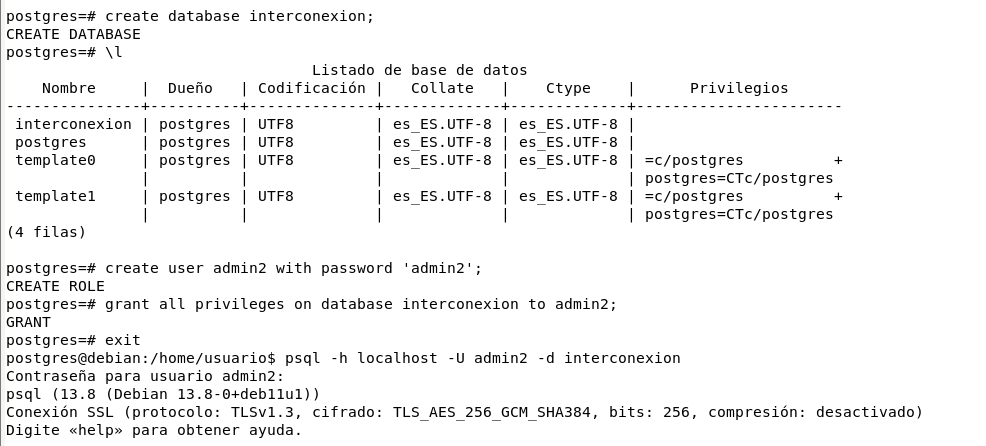
- Creamos una tabla y añadimos algunos datos.
create table director
(
codigo varchar (5),
nombre varchar (15),
apellido varchar (15),
constraint pk_director primary key (codigo)
);
insert into director values ('0001','Jon', 'Favreau');
insert into director values ('0002', 'Taika', 'Waititi');
insert into director values ('0003','Anthony', 'Russo');
insert into director values ('0004','Jon', 'Watts');
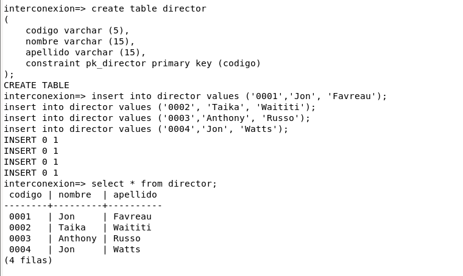
1.2 Configuración básica
Modificamos el fichero /etc/postgresql/13/main/postgresql.conf, y modificamos listen_addresses.
sudo nano /etc/postgresql/13/main/postgresql.conf
listen_addresses = '*'
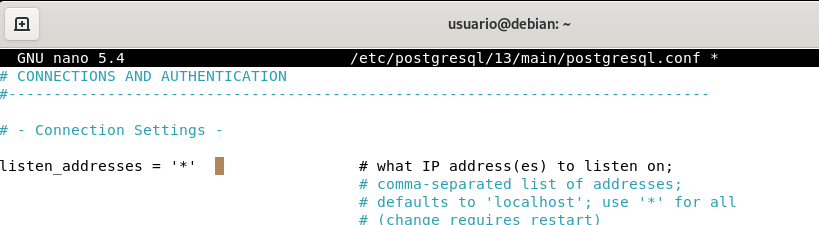
Modificamos el fichero /etc/postgresql/13/main/pg_hba.conf, y lo dejamos del siguiente modo.
sudo nano /etc/postgresql/13/main/pg_hba.conf
host all all all md5
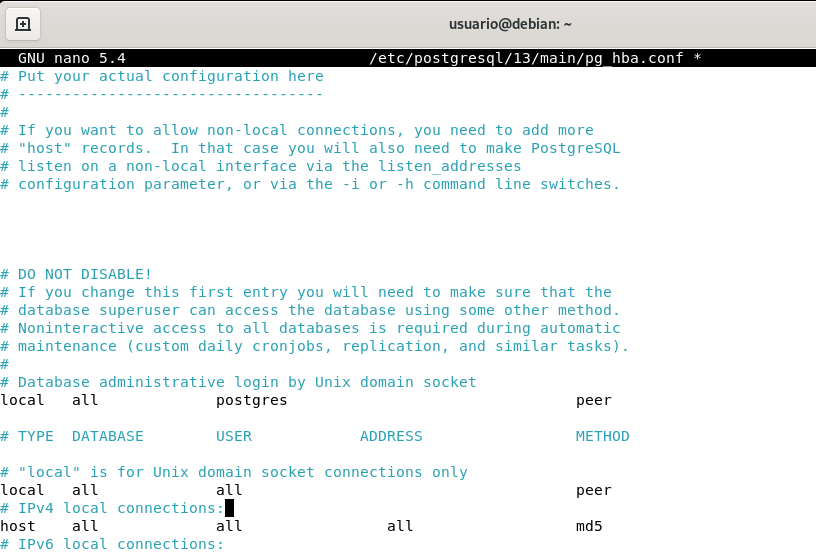
Reiniciamos el servicio para que carguen los nuevos cambios:
sudo systemctl restart postgresql
Esta configuración también la he hecho en el otro servidor de base de datos (adjunto capturas).
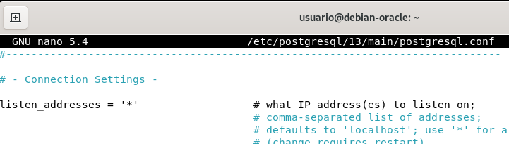
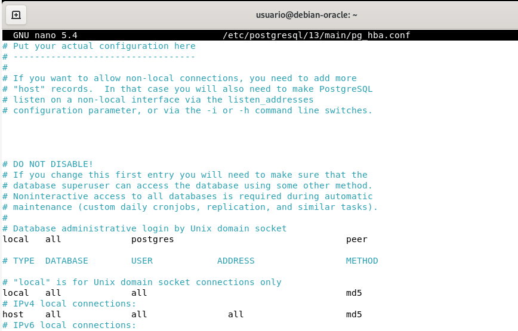
1.3 Configuración del enlace
El enlace dblink lo realizamos en el servidor desde el cual queremos realizar las consultas, que en mi caso será la máquina debian.
Con el usuario postgres entramos en la base de datos interconexion y creamos la conexión.
sudo su postgres
psql -d interconexion
create extension dblink;
Podemos usar \dx para ver la lista de extensiones.
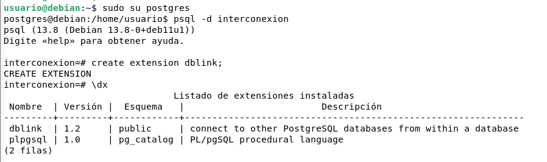
Para conectarnos desde la máquina debian-oracle y poder hacer consultas a la base de datos interconexion de la máquina debian tendremos que realizar estos mismos pasos.
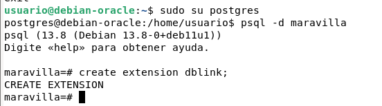
1.4 Comprobación de la interconexión
Desde el servidor PostgrSQL de la máquina debian:
Ya podremos realizar consultas de ambas bases de datos desde la máquina debian. Comprobamos que podemos consultar registros de la base de datos maravilla usando dblink.
select * from dblink ('dbname=maravilla host=192.168.122.98 user=admin password=admin', 'select codigo,titulo from pelicula') as peliculas (codigo varchar, titulo varchar);
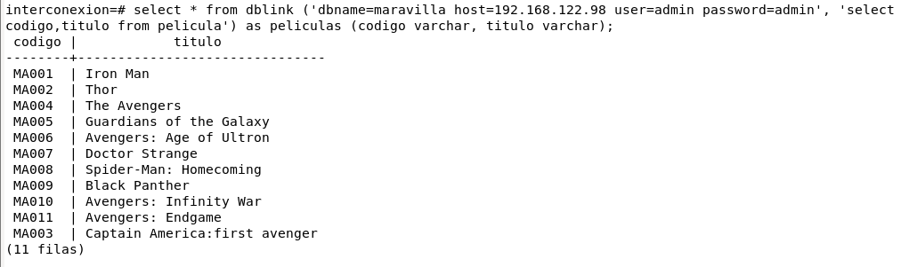
Hacemos una consulta de ambas bases de datos. La consulta mostrará el nombre y apellido de los directores que también sean actores.
select director.nombre as nombre, director.apellido as apellido from director, dblink ('dbname=maravilla host=192.168.122.98 user=admin password=admin', 'select nombre, apellido from actor') as actor (nombre varchar, apellido varchar) where director.nombre=actor.nombre and director.apellido=actor.apellido;
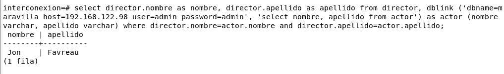
Desde el servidor PostgreSQL de la máquina debian-oracle:
Haremos una consulta sencilla simplemente para comprobar que funciona. La consulta será la siguiente:
select * from dblink ('dbname=interconexion host=192.168.122.156 user=admin2 password=admin2', 'select * from director') as director (codigo varchar, nombre varchar, apellido varchar);
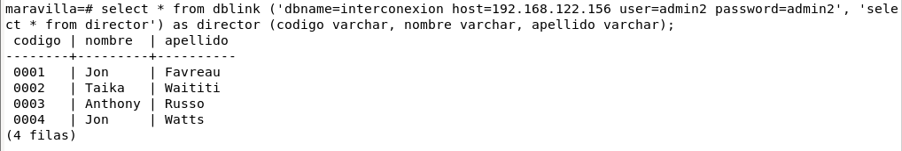
2. Interconexión entre dos bases de datos Oracle.
2.1 Configuración inicial
El primer servidor Oracle 19c será el de la máquina debian-oracle de la práctica anterior con la IP 192.168.122.98. Este Oracle ya lo tenemos instalado con las tablas pelicula, actor y pelicula_actor, y solo tendremos que hacer algunos pequeños cambios en tnsnames.ora para que se conecte con nuestro otro servidor.
El segundo servidor Oracle también lo he instalado en Debian 11, siguiendo los mismos pasos que en la primera práctica. El nombre de la máquina es debora y tiene la IP 192.168.122.137.
Una vez instalado y ya dentro de sqlplus, he creado un usuario llamado “usuario” con contraseña “usuario” y me he conectado con éste.
create user usuario identified by usuario;
grant all privileges to usuario;
conn usuario;
Creo la siguiente tabla con los siguientes datos:
create table director
(
codigo varchar2 (5),
nombre varchar2 (15),
apellido varchar2 (15),
constraint pk_director primary key (codigo)
);
insert into director values ('0001','Jon', 'Favreau');
insert into director values ('0002', 'Taika', 'Waititi');
insert into director values ('0003','Anthony', 'Russo');
insert into director values ('0004','Jon', 'Watts');
2.2 Interconexión
Modificamos el fichero listener.ora para que escuche en todas las interfaces de la máquina en el puerto por defecto 1521. Quedaría de la siguiente manera:
sudo nano /opt/oracle/product/19c/dbhome_1/network/admin/listener.ora
SID_LIST_LISTENER =
(SID_LIST =
(SID_DESC =
(GLOBAL_DBNAME = ORCLCDB)
(ORACLE_HOME = /opt/oracle/product/19c/dbhome_1)
(SID_NAME = ORCLCDB)
)
)
LISTENER =
(DESCRIPTION_LIST =
(DESCRIPTION =
(ADDRESS = (PROTOCOL = TCP)(HOST = 0.0.0.0)(PORT = 1521))
(ADDRESS = (PROTOCOL = IPC)(KEY = EXTPROC1521))
)
)
A continuación modificamos el fichero tnsnames.ora. Se creará un alias para el servidor al que nos queremos conectar (debian-oracle). Se especifica el protocolo, la dirección IP y el puerto del servidor. En mi caso quedaría así:
sudo nano /opt/oracle/product/19c/dbhome_1/network/admin/tnsnames.ora
ORCLCDB =
(DESCRIPTION =
(ADDRESS = (PROTOCOL = TCP)(HOST = localhost)(PORT = 1521))
(CONNECT_DATA =
(SERVER = DEDICATED)
(SERVICE_NAME = ORCLCDB)
)
)
LISTENER_ORCLCDB =
(ADDRESS = (PROTOCOL = TCP)(HOST = localhost)(PORT = 1521))
DEBIAN-ORACLE =
(DESCRIPTION =
(ADDRESS = (PROTOCOL = TCP)(HOST = 192.168.122.98)(PORT = 1521))
(CONNECT_DATA =
(SERVER = DEDICATED)
(SERVICE_NAME = ORCLCDB)
)
)
En el servidor de la máquina debian-oracle he añadido a tnsnames lo siguiente:
DEBORA =
(DESCRIPTION =
(ADDRESS = (PROTOCOL = TCP)(HOST = 192.168.122.137)(PORT = 1521))
(CONNECT_DATA =
(SERVER = DEDICATED)
(SERVICE_NAME = ORCLCDB)
)
)
Después de estos cambios tenemos que asegurarnos de que el listener está activo en ambos servidores para ello, con el usuario oracle comprobamos el estado, y si no está en funcionamiento lo ativamos.
su oracle
lsnrctl status
lsnrctl start
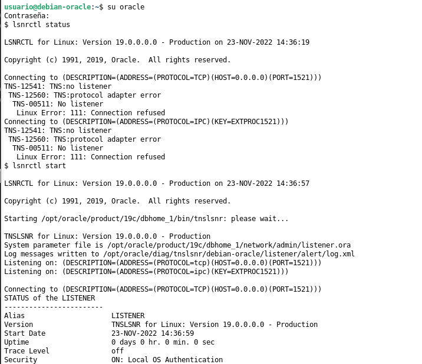
Ya podemos crear la conexión.
create database link debianoracle_link connect to admin identified by admin using 'debian-oracle';
debianoracle_link: es el nombre que le he dado a la conexión. conect to admin: es el usuario del servidor debian-oracle. identified by admin: es la contraseña del usuario. using debian-oracle: es el nombre del alias que he creado en tnsnames.ora
2.3 Prueba de conexión
Desde la máquina debora:
Hacemos alguna consulta para comprobar que funciona.
select * from pelicula@debianoracle_link;
select director.nombre as nombre, director.apellido as apellido from actor@debianoracle_link actor, director where director.nombre=actor.nombre and director.apellido=actor.apellido;
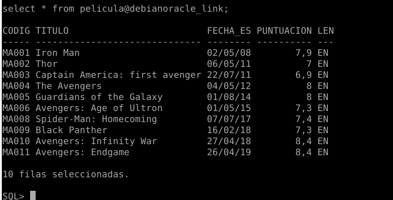
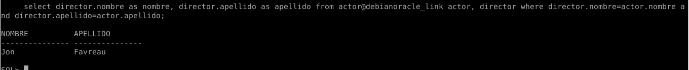
Desde la máquina debian-oracle:
Creamos el enlace:
create database link debora_link connect to usuario identified by usuario using 'debora';
Hacemos una consulta sencilla para comprobar que funciona.
select * from director@debora_link;
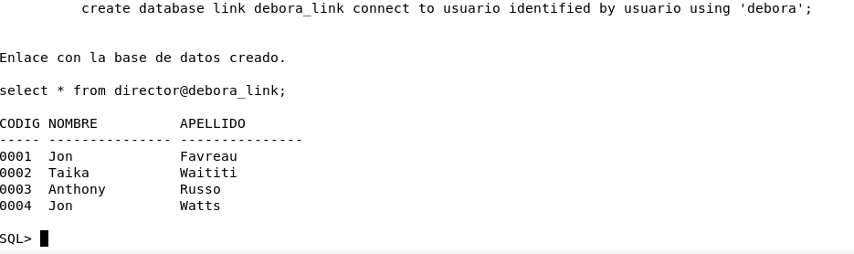
3. Interconexión entre base de dato Oracle y Postgres (usando Heterogeneus Services).
Para este último ejercicio, voy a conectar el servidor de base de datos Postgres de la máquina debian del primer apartado (IP 192.168.122.156) con la base de datos Oracle 19c de la máquina debian-oracle (IP 192.168.122.98).
En el servidor Postgres tengo creada la base de datos interconexion con la tabla director y el usuario admin2.
En el servidor Oracle tengo creadas las tablas pelicula, actor y pelicula_actor. Y el usuario es admin.
Dependiendo del servidor que realicemos la conexión se hará de una forma u otra.
3.1 Conexión desde Oracle 19c a PostgreSQL:
3.1.1 Instalar y configurar el driver ODBC:
Instalamos el driver ODBC en el servidor debian-oracle. Este nos permitirá acceder a cualquier sistema destor de base de datos.
sudo apt install odbc-postgresql unixodbc
Se nos crea el fichero /etc/odbcinst.ini. Nos aparecerá la siguiente información. La dejamos tal cual.
[PostgreSQL ANSI]
Description=PostgreSQL ODBC driver (ANSI version)
Driver=psqlodbca.so
Setup=libodbcpsqlS.so
Debug=0
CommLog=1
UsageCount=1
[PostgreSQL Unicode]
Description=PostgreSQL ODBC driver (Unicode version)
Driver=psqlodbcw.so
Setup=libodbcpsqlS.so
Debug=0
CommLog=1
UsageCount=1
A continuación añadimos la información de la conexión al fichero /etc/odbc.ini, el cual por defecto se encuentra vacío.
[PSQLA]
Debug = 0
CommLog = 0
ReadOnly = 1
Driver = PostgreSQL ANSI
Servername = 192.168.122.156
Username = admin2
Password = admin2
Port = 5432
Database = interconexion
Trace = 0
TraceFile = /tmp/sql.log
[PSQLU]
Debug = 0
CommLog = 0
ReadOnly = 0
Driver = PostgreSQL Unicode
Servername = 192.168.122.156
Username = admin2
Password = admin2
Port = 5432
Database = interconexion
Trace = 0
TraceFile = /tmp/sql.log
[Default]
Driver = /usr/lib/x86_64-linux-gnu/odbc/liboplodbcS.so
Con isql podemos comprobar que ya tenemos conexión a la base de datos y ver sus tablas.
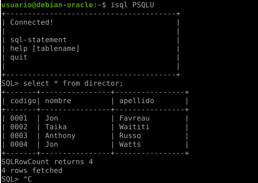
3.1.2 Configurar Heterogeneus Services en Oracle:
Aunque podamos ver datos con el driver, Oracle todavía no está configurado para usarlo, así que esto será lo siguiente que haremos.
Creamos el fichero de inicio para Heterogeneus que se encuentra en /opt/oracle/product/19c/dbhome_1/hs/admin/initPSQLU.ora.
sudo nano /opt/oracle/product/19c/dbhome_1/hs/admin/initPSQLU.ora
HS_FDS_CONNECT_INFO = PSQLU
HS_FDS_TRACE_LEVEL = DEBUG
HS_FDS_SHAREABLE_NAME = /usr/lib/x86_64-linux-gnu/odbc/psqlodbcw.so
HS_LANGUAGE = AMERICAN_AMERICA.WE8ISO8859P1
set ODBCINI=/etc/odbc.ini
Ahora configuramos listener.ora para especificar el driver que queremos que use para escuchar las peticiones.
sudo nano /opt/oracle/product/19c/dbhome_1/network/admin/listener.ora
Añadimos otra entrada a SID_LIST.
(SID_DESC=
(SID_NAME=PSQLU)
(ORACLE_HOME=/opt/oracle/product/19c/dbhome_1)
(PROGRAM=dg4odbc)
)
El fichero listener.ora quedaría de la siguiente forma:
SID_LIST_LISTENER =
(SID_LIST =
(SID_DESC =
(GLOBAL_DBNAME = ORCLCDB)
(ORACLE_HOME = /opt/oracle/product/19c/dbhome_1)
(SID_NAME = ORCLCDB)
)
(SID_DESC =
(SID_NAME = PSQLU)
(ORACLE_HOME = /opt/oracle/product/19c/dbhome_1)
(PROGRAM = dg4odbc)
)
)
LISTENER =
(DESCRIPTION_LIST =
(DESCRIPTION =
(ADDRESS = (PROTOCOL = TCP)(HOST = 0.0.0.0)(PORT = 1521))
(ADDRESS = (PROTOCOL = IPC)(KEY = EXTPROC1521))
)
)
También incluimos una entrada en el fichero tnsnames.ora.
sudo nano /opt/oracle/product/19c/dbhome_1/network/admin/tnsnames.ora
PSQLU =
(DESCRIPTION =
(ADDRESS = (PROTOCOL=tcp) (HOST =1 92.168.122.156) (PORT = 1521))
(CONNECT_DATA = (SID = PSQLU))
(HS = OK)
)
tnsnames.ora quedaría del siguiente modo:
ORCLCDB =
(DESCRIPTION =
(ADDRESS = (PROTOCOL = TCP)(HOST = debian-oracle)(PORT = 1521))
(CONNECT_DATA =
(SERVICE_NAME = ORCLCDB)
)
)
LISTENER_ORCLCDB =
(ADDRESS = (PROTOCOL = TCP)(HOST = debian-oracle)(PORT = 1521))
PSQLU =
(DESCRIPTION =
(ADDRESS = (PROTOCOL = tcp)(HOST = localhost)(PORT = 1521))
(CONNECT_DATA = (SID = PSQLU))
(HS = OK)
)
Por último, reiniciamos el listener desde el usuario oracle.
su oracle
lsnrctl stop
lsnrctl start
3.1.3 Prueba de conexión
Entramos en sqlplus y creamos el enlace.
rlwrap sqlplus admin
create public database link linkpostgres connect to "admin2" identified by "admin2" using 'PSQLU';
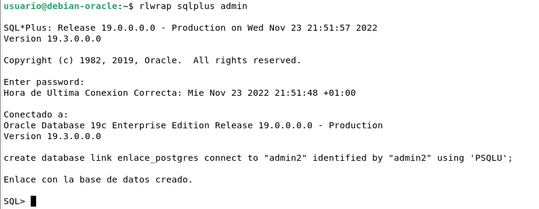
Hacemos una consulta para comprobar que funciona.
select "nombre" from "director"@linkpostgres;
select director."nombre" as nombre, director."apellido" as apellido from actor, "director"@linkpostgres director where director."nombre" = actor.nombre and director."apellido" = actor.apellido;
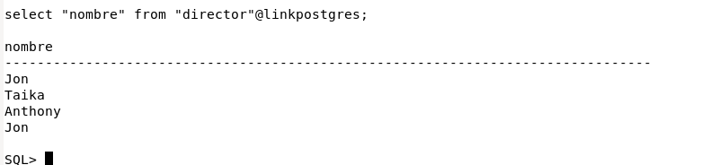
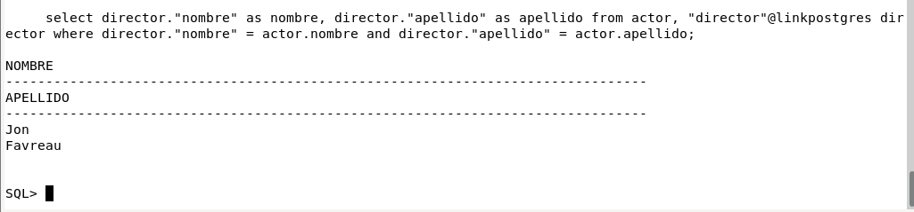
3.2 Conexión desde PstgreSQL a Oracle 19c:
En la máquina debian con el servidor PostgreSQL, lo primero que habrá que hacer es instalar los siguientes paquetes si no los tenemos.
sudo apt install alien libaio1 postgresql-server-dev-all build-essential git
Descargamos los .rpm de Oracle Instant Client, que usaremos para poder conectarnos a la base de datos Oracle.
wget https://download.oracle.com/otn_software/linux/instantclient/195000/oracle-instantclient19.5-basic-19.5.0.0.0-1.x86_64.rpm
wget https://download.oracle.com/otn_software/linux/instantclient/195000/oracle-instantclient19.5-sqlplus-19.5.0.0.0-1.x86_64.rpm
wget https://download.oracle.com/otn_software/linux/instantclient/195000/oracle-instantclient19.5-tools-19.5.0.0.0-1.x86_64.rpm
wget https://download.oracle.com/otn_software/linux/instantclient/195000/oracle-instantclient19.5-devel-19.5.0.0.0-1.x86_64.rpm
Convertimos los .rpm a .deb con alien.
sudo alien -d oracle-instantclient19.5-basic-19.5.0.0.0-1.x86_64.rpm
sudo alien -d oracle-instantclient19.5-sqlplus-19.5.0.0.0-1.x86_64.rpm
sudo alien -d oracle-instantclient19.5-tools-19.5.0.0.0-1.x86_64.rpm
sudo alien -d oracle-instantclient19.5-devel-19.5.0.0.0-1.x86_64.rpm
Instalamos los .deb.
sudo dpkg -i oracle-instantclient19.5-basic_19.5.0.0.0-2_amd64.deb
sudo dpkg -i oracle-instantclient19.5-sqlplus_19.5.0.0.0-1.x86_64.deb
sudo dpkg -i oracle-instantclient19.5-tools_19.5.0.0.0-1.x86_64.deb
sudo dpkg -i oracle-instantclient19.5-devel_19.5.0.0.0-1.x86_64.deb
El paquete oracle_fdw para postgres la he clonado de un repositorio git.
git clone https://github.com/laurenz/oracle_fdw.git
A continuación he añadido las siguientes variables de entorno a ~/.bashrc
sudo nano ~/.bashrc
export ORACLE_HOME="/usr/lib/oracle/19.5/client64"
export LD_LIBRARY_PATH="/usr/lib/oracle/19.5/client64/lib"
export PATH=$ORACLE_HOME:$PATH
export USE_PGXS=1
Compilamos el paquete con make.
cd oracle_fdw
make
Para que no de error hay que modificar el fichero Makefile añadiendo las siguientes líneas:
-I/usr/include/oracle/19.5/client64 : Se añade en la variable PG_CPPFLAGS
-L/usr/lib/oracle/19.5/client64/lib : Se añade en la variable SHLIB_LINK
Realizamos la instalación.
sudo make install
Entramos en la base de datos con el usuario postgres y creamos la extension como se ve a continuación.
su postgres
psql
create extension oracle_fdw;
Ahora se creará un servidor con create server en el que se especificará un nombre para la conexion, el nombre de la extension oracle_fdw, la IP del servidor Oracle 19c y el nombre de la base de datos.
create server linkoracle foreign data wrapper oracle_fdw options(dbserver '//192.168.122.98:1521/ORCLCDB');
Le asignamos a esta conexión el nombre de usuario y contraseña.
create user mapping for postgres server linkoracle options(user 'admin',password 'admin');
Por último se crea una tabla externa con las mismas columnas que la tabla original. En mi caso crearé una tabla externa de la tabla película. Las opciones schema y table deben ir en mayúsculas. Quedaría de la siguiente forma:
create foreign table pelicula(codigo varchar(5),titulo varchar(30),fecha_estreno date, puntuacion numeric(3,1),lengua_original varchar(3)) server linkoracle options(schema 'ADMIN', table 'PELICULA');
Y ya podremos realizar la consulta desde Postgres al servidor Oracle.
select * from pelicula;
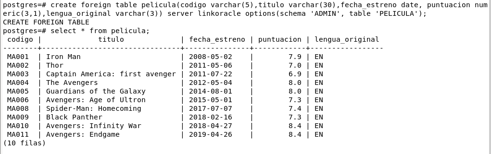